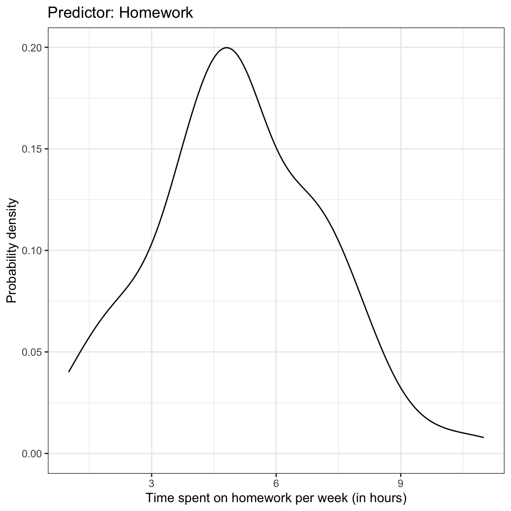
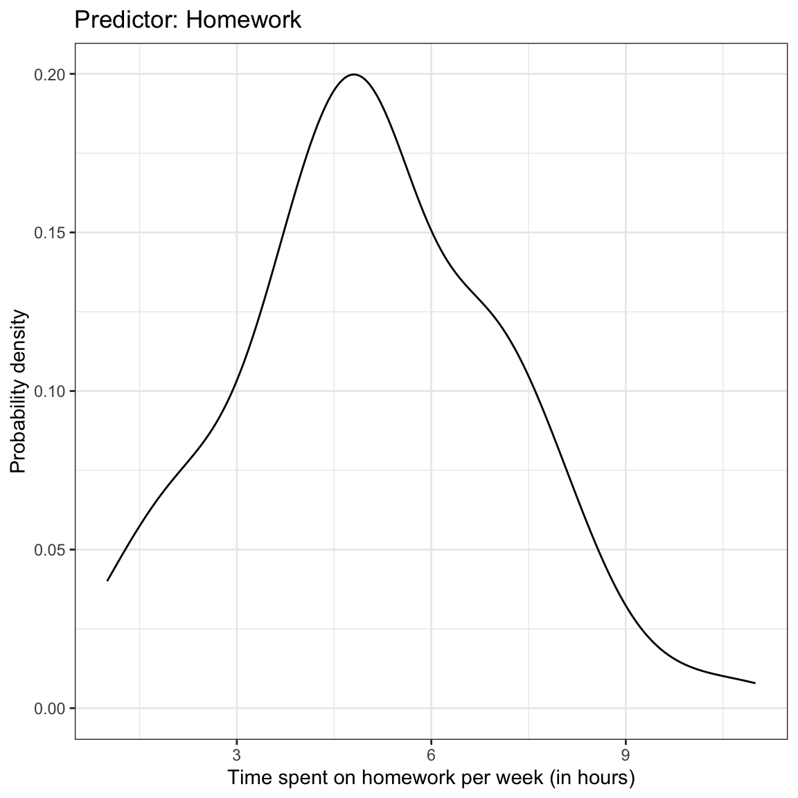

Correlation and Standardized Regression
In this chapter, you will learn about correlation and its role in regression. To do so, we will use the keith-gpa.csv data to examine whether time spent on homework is related to GPA. The data contain three attributes collected from a random sample of \(n=100\) 8th-grade students (see the data codebook). To begin, we will load several libraries and import the data into an object called keith.
# Load libraries
library(corrr)
library(dplyr)
library(ggplot2)
library(readr)
# Read in data
keith = read_csv(file = "https://raw.githubusercontent.com/zief0002/epsy-8251/master/data/keith-gpa.csv")
head(keith)# A tibble: 6 x 3
gpa homework parent_ed
<dbl> <dbl> <dbl>
1 78 2 13
2 79 6 14
3 79 1 13
4 89 5 13
5 82 3 16
6 77 4 13Data Exploration
We begin by looking at the marginal distributions of both time spent on homework and GPA. We will also examine summary statistics of these variables (output presented in table). Finally, we also examine a scatterplot of GPA versus time spent on homework.
 

Density plots of the marginal distributions of GPA and time spent on homework. The scatterplot showing the relationship between GPA and time spent on homework is also shown.
# Summary statistics
keith %>%
summarize(
M_gpa = mean(gpa),
SD_gpa = sd(gpa),
M_hw = mean(homework),
SD_hw = sd(homework)
)| Measure | M | SD |
|---|---|---|
| GPA | 80.47 | 7.62 |
| Time spent on homework | 5.09 | 2.06 |
We might describe the results of this analysis as follows:
The marginal distributions of GPA and time spent on homework are both unimodal. The average amount of time these 8th-grade students spend on homework each week is 5.09 hours (SD = 2.06). These 8th-grade students have a mean GPA of 80.47 (SD = 7.62) on a 100-pt scale. There is a moderate, positive, linear relationship between time spent on homework and GPA for these students. This suggests that 8th-grade students who spend less time on homework tend to have lower GPAs, on average, than students who spend more time on homework.
Correlation
To numerically summarize the linear relationship between variables, we typically compute correlation coefficients. The correlation coefficient is a quantification of the direction and strength of the relationship. (It is important to note that the correlation coefficient is only an appropriate summarization of the relationship if the functional form of the relationship is linear.)
To compute the correlation coefficient, we use the correlate() function from the corrr package. We can use the dplyr-type syntax to select the variables we want correlations between, and then pipe that into the correlate() function. Typically the response (or outcome) variable is the first variable provided in the select() function, followed by the predictor.
# A tibble: 2 x 3
rowname gpa homework
<chr> <dbl> <dbl>
1 gpa NA 0.327
2 homework 0.327 NA When reporting the correlation coefficient is is conventional to use a lower-case \(r\) and report the value to two decimal places. Subscripts are also generally used to indicate the variables. For example,
\[ r_{\mathrm{GPA,~Homework}} = 0.33 \]
It is important to keep in mind this value is only useful as a measure of the strength of the relationship when the relationship between variables is linear. Here is an example where the correlation coefficient would be misleading about the strength of the relationship.

Hours of daylight versus day of the year for \(n=75\) days in Minneapolis.
Here there is a perfect relationship between day of the year and hours of daylight. If you fitted a nonlinear model here, your “line” would match the data exactly (no residual error!). But the correlation coefficient does not reflect that (\(r=-0.34\)).
You should always create a scatterplot to examine the relationship graphically before computing a correlation coefficient to numerically summarize it.